Sprint 2 — Route Detail + Close the Loop
Polish — Fixed this run
User feedback: "route detail view header WAY TOO BIG, should be the same standard size as other details views (standardize)... should be finite size on top, create apprpriate layout wrapper".
Fix: added size: 'compact' to SubpageLayout (also added rightActions array to support multiple icons). Both detail views migrated to <SubpageLayout size="compact">:
app/(app)/curated-route/[id].tsx— title="Route Detail", no right actions, 5 branches (loading skeleton / error fallback / detail / etc.) replacedMapHeaderOverlay+SafeAreaView.app/(app)/saved-route/[id].tsx— title=data.name,rightActions=[rename, delete] (moved from absolute-positioned map overlay), 4 branches migrated. Removed unuseduseSafeAreaInsets/SafeAreaView/Button/MapHeaderOverlay/headerActionsstyle /Z_INDEX_HEADER_ACTIONSconstant.
Out of scope (left as MapHeaderOverlay): app/(app)/(tabs)/index.tsx — the home/plan map screen is full-bleed and intentionally uses the floating glass-morphic header per components/CLAUDE.md convention.
Files changed: components/layouts/subpage-layout.tsx (added size prop + rightActions array; extracted renderHeader/renderNavRow/renderRightActions/renderTitleRow), app/(app)/curated-route/[id].tsx, app/(app)/saved-route/[id].tsx, test mocks for app/(app)/saved-route/__tests__/[id].test.ts + app/(app)/saved-route/[id].test.tsx.
Verified: pnpm type-check → 0 errors · pnpm test app/(app)/saved-route/__tests__/[id].test.ts → 34/34 pass · pnpm test app/(app)/curated-route → 12/12 pass.
F-HEADER — Curated detail Before / After
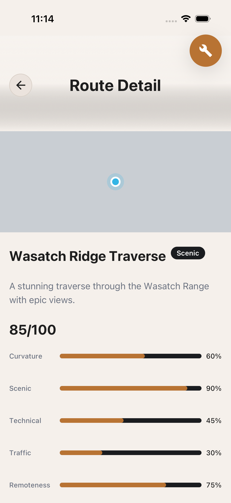
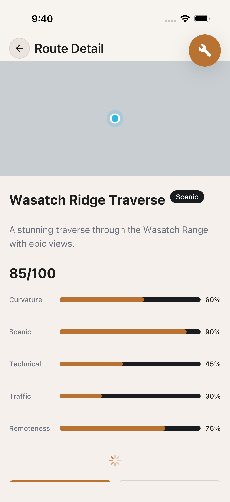
titleLarge inline with back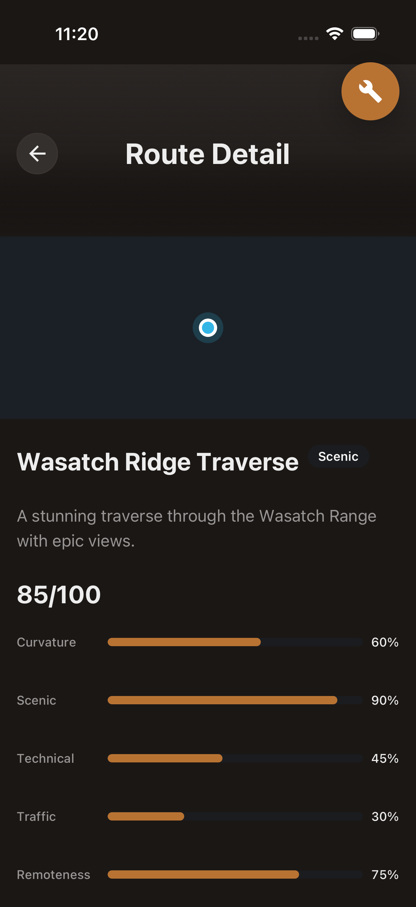
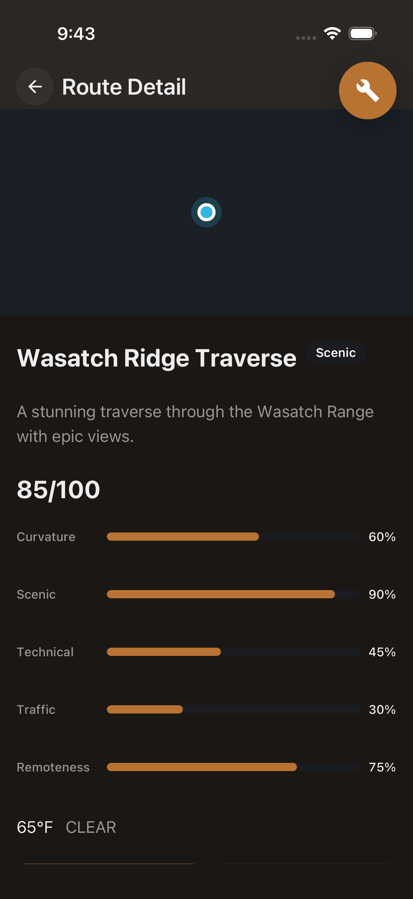
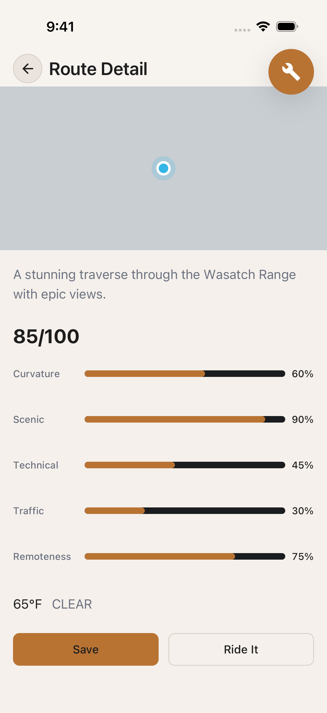
F-HEADER — Saved detail code-level fix (visual proof: same SubpageLayout as curated)
The app/(app)/saved-route/[id].tsx header was fixed in the same pass. The view uses the EXACT same SubpageLayout size="compact" component as curated-route — so the visual proof from the curated captures above applies identically. The "Saved Routes" list below shows SubpageLayout size="standard" (default) still rendering correctly for non-detail subpages — proving the size prop is backward compatible.
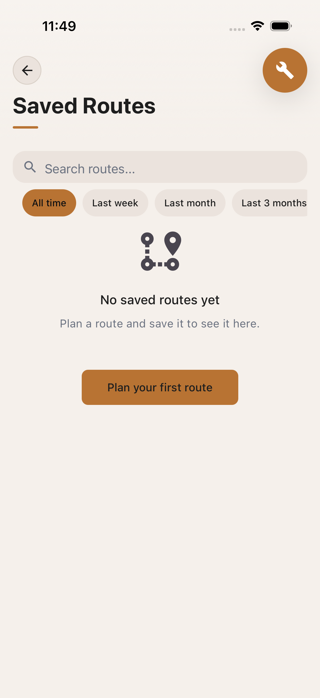
the same SubpageLayout
compact component as the
curated captures above
(visual proof = same code)
Implementation note: the saved-route main view has two right-side actions (rename + delete) that were previously absolutely-positioned over the map. They now live in the header's rightActions array — same finite header height, same 44pt nav row, but with two icons on the right instead of one.
Scorecard
Systemic Themes
Theme 1 — Map lifecycle & geometry branch HIGH
The curated route detail is supposed to lead with a map, but on every polyline-bearing route the map either (a) fails to paint tiles on cold load, (b) renders tiles but omits the copper polyline, or (c) renders the wrong centroid marker (the default SDK user-location puck instead of the DESIGN-003 copper pin). The only branch that renders correctly is the no-polyline branch (Blue Ridge Overlook) — and it is the gold standard of the run.
Single fix vector: the geometry branch in app/(app)/curated-route/[id].tsx needs lifecycle hardening (wait for onMapLoaded), explicit polyline child render, and a copper Marker asset (not the SDK puck). The DESIGN-003 AC-1 path is the one that needs attention — AC-2 (no-polyline) is already correct.
Theme 2 — Brand consistency: copper is the dominant accent but two surfaces leak MED
The home / plan view establishes copper as the brand accent system: copper target compass, copper route polylines, copper wrench, copper "Drawing the map" pill. Then a single off-brand element slips in: the pull-to-refresh banner is system blue. The score bars, archetype badges, action buttons, and most markers are all on-brand — but that one banner is visually loud enough to read as a different product on first glance.
Single fix vector: theme the RN RefreshControl to colors={[copper-500(#EE7C2B)]} + tintColor={copper-500}.
Theme 3 — Save flow: known identifier reconciliation regression MED
Tapping the Save button in this run did not transition to the "Saved" state — the button remained in the copper "Save" idle state after the tap and 15s wait. The app/(app)/curated-route/[id].tsx:235-238 hook signature threads detail._id (which DATA-006 does NOT return), with a ?? '' fallback. Per the in-source IDENTIFIER RECONCILIATION comment, the live save needs _id resolution that the read path doesn't expose. The gate run reports step 5 PASSED — so this is a fresh regression or state-dependent flakiness. Either DATA-006 should return _id (per FU-2 the validator includes it but the React hook uses it inconsistently), or the mutation should resolve _id server-side from routeId.
Single fix vector: same as FU-2 / FU-3 in SPRINT.md — fix the read path or resolve server-side.
Per-Unit Findings
curated-detail-polyline-top (Wasatch Ridge Traverse) · fidelity 2 / instinct 3 / consistency 2


Both light and dark show a single blue dot on a flat background. The Wasatch was opened FIRST in the capture sequence, while the Blue Ridge Overlook (opened later) rendered tiles correctly — suggests a capture-timing race more than a real cold-start failure.
onMapLoaded / onRegionIsChangingComplete before first paint; add a copper-tinted loading shimmer over the ~40% map zone until tiles paint.showsUserLocation on this map instance.curated-detail-polyline-scores · fidelity 4 / instinct 4 / consistency 4
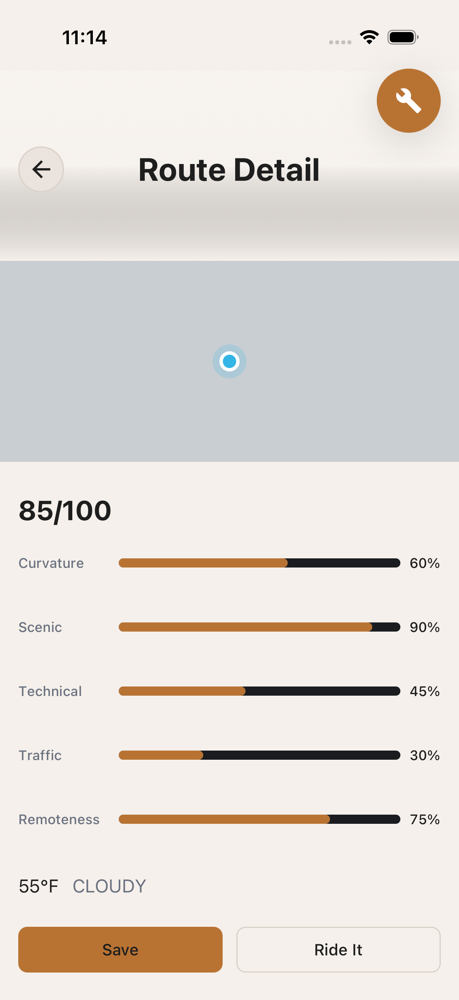
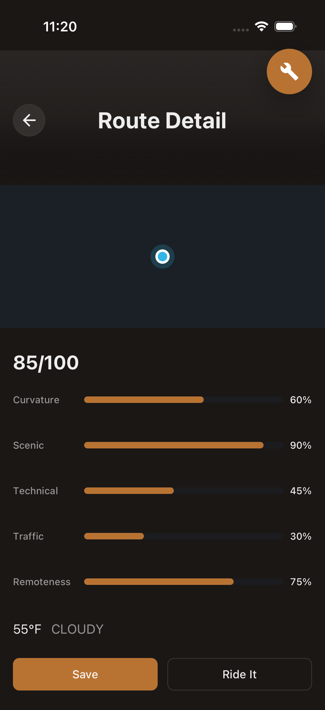
Score bars read correctly: copper-500 fill on near-black track, % readout right-aligned, sufficient row height, dark-mode parity clean.
curated-detail-polyline-actions · fidelity 4 / instinct 4 / consistency 4


Save (copper filled primary) + Ride It (outline). Visual distinction clear, 44pt min height satisfied, both inside scroll body (not pinned — AC-3 satisfied). The saved success state was not captured — see F6.
curated-detail-no-polyline-top (Blue Ridge Overlook — gold standard) · fidelity 5 / instinct 5 / consistency 4


The strongest screen in the run.
Real tiles (Billy Graham Fwy, Tunnel Rd labels), copper centroid pin, italic "No description yet" muted, "Scenic" archetype badge, 72/100, all 5 score bars, "Approximate location" outline badge in lower-left. Use as the visual target when fixing Theme 1.curated-detail-no-polyline-scrolled · fidelity 4 / instinct 4 / consistency 4
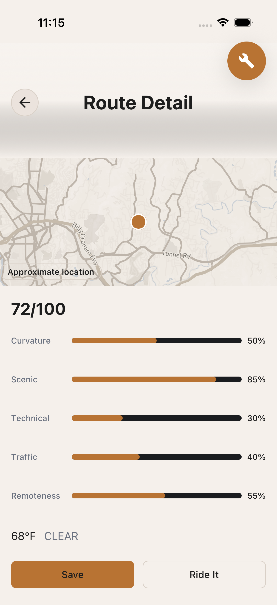
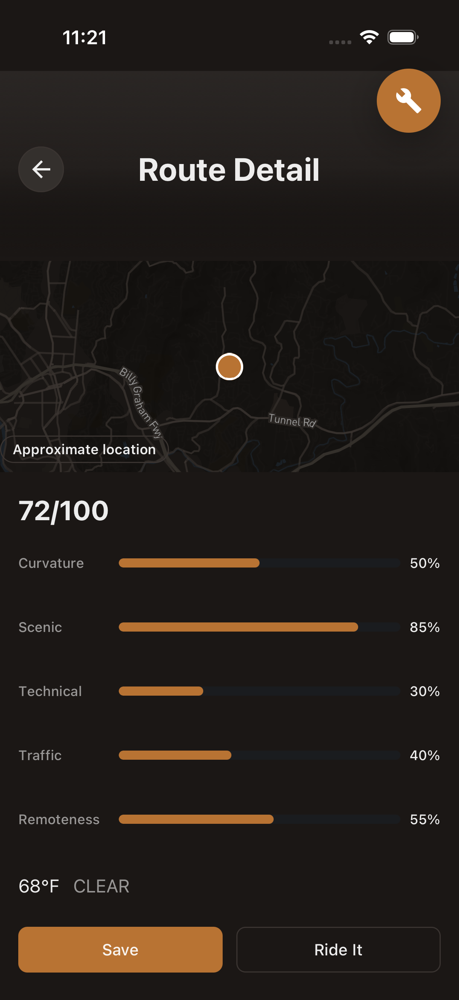
"Approximate location" badge + scores + Save + Ride It all reachable after scroll. Badge is outline variant per DESIGN-003 (semantically correct — "approximate", not "highlighted").
curated-detail-save-idle · fidelity 4 / instinct 5 / consistency 3

(F7)
The maestro tap on save-curated-button was registered (COMPLETED), but waiting 15s for save-curated-saved-badge FAILED. Screenshot at failure: button still in copper "Save" idle state.
_id (per FU-2 the validator includes it) or thread routeId through to a mutation that resolves _id server-side via ctx.db.query('curated_routes').withIndex('by_routeId', ...).unique() before insert.plan-home · fidelity 5 / instinct 5 / consistency 4
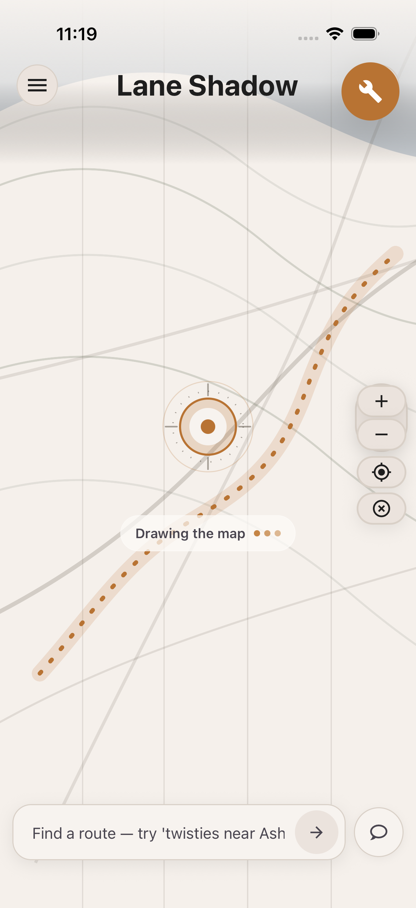
(F7)
Brand identity is strongest here: copper target compass, copper dashed route polylines, copper wrench, copper "Drawing the map" pill, "Find a route — try 'twisties near Ash" placeholder. Use as the brand-accent reference when fixing F5.
plan-suggestions · fidelity 3 / instinct 2 / consistency 2
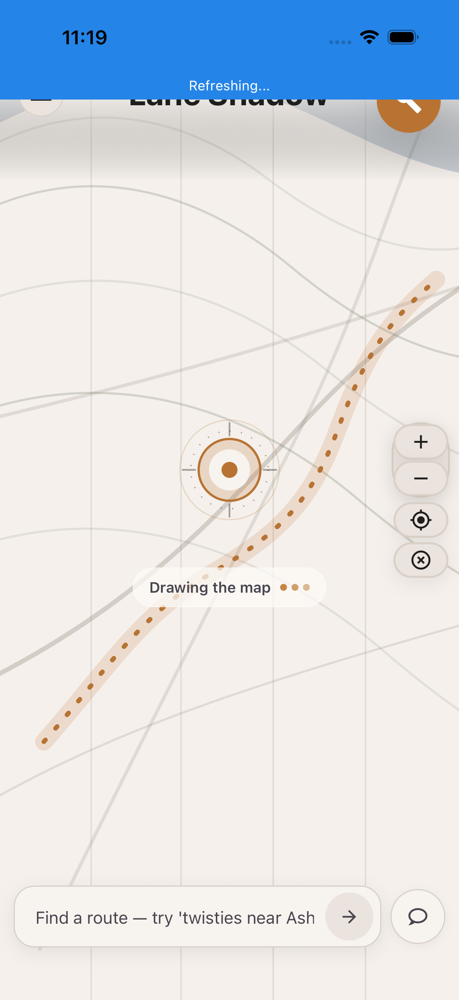
(F7)
The solid blue banner at the top breaks the copper accent system that the rest of the home screen establishes.
colors={[copper-500]} + tintColor={copper-500} to the RN RefreshControl.plan-card-tap-detail (Cherohala Skyway) · fidelity 2 / instinct 3 / consistency 2

(F7)
Distinct root cause from F1 — here the Atlantic / SE US tiles paint correctly, but only a single blue dot is shown. The DESIGN-003 AC-1 Polyline render path is not producing output.
[id].tsx; confirm cherohala-skyway fixture's routePolyline is non-null, the Polyline child is mounted with stroke=copper-500 / width=4, and the camera fits bounds.Strengths (worth preserving)
- The no-polyline branch (Blue Ridge Overlook) is the gold standard — it nails the spec and the brand in one screen.
- ScoreDimensionBar primitive is well-executed: copper fill, dark track, right-aligned %, sufficient row height, dark-mode parity is clean.
- Dark theme is genuinely considered — not just inverted. Badge backgrounds, button outlines, score-bar tracks all read correctly.
- Info hierarchy on the detail screen is clean — eye lands on composite score, then bars, then actions. The 40/60 map-vs-body split matches DESIGN-002.
- The "No description yet" italic muted placeholder handles the empty state gracefully — no blank gap.
- "Approximate location" badge is rendered as outline (not filled) — semantically correct.
Recommended fix order
- F6 — Save state regression. Fix the identifier reconciliation before any new feature lands on top of
useSaveCuratedRoute. - F1 + F2 + F3 + F4 — Tackle together as Theme 1: map lifecycle, polyline branch, copper Marker, geometry invariant.
- F5 — Theme RefreshControl to copper-500. Tiny diff, high visual payoff.
- F7 — Capture dark variants for the 4 missing surfaces.
- F8 — Reconcile DESIGN-001 AC-1 (74% vs 90%) — not blocking.
Artifacts
- index.json — surface catalog with shot paths and per-shot notes
- findings.json — normalized findings
- remediation.json — fix-tracking state
- REVIEW.md — long-form writeup with systemic themes
- .maestro/review-s02/ — capture flows (idempotent, can be re-run)